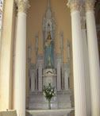
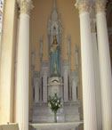

-
 Lacy Carpenter
Lacy Carpenter
Performing with American Singers in Piltown Church
-
 Waterford's new Bridge
Waterford's new Bridge
The new bridge is the most modern landmark to be seen from around Templeorum village and surrounds .
-
 Temleorum and Corbally Hill
Temleorum and Corbally Hill
Corbally Hill overlooks Templeorum and the Suir Valley.
-
 Fiddown Wooden Bridge
Fiddown Wooden Bridge
Fiddown Bridge was constructed in 1853 by Waterford and Limerick Railway Company. The bridge was taken over by Great Southern and Western Railway in 1901. It was the last toll bridge in Ireland, until the modern toll roads were introduced.
-
 Tybroughney Stones
Tybroughney Stones
Tybroughney Stones in the Garaveyard in Tybroughney.Maintained by interested people of Tybroughney.
-
 Forgiveness Stone Eucharistic Congress
Forgiveness Stone Eucharistic Congress
The Forgiveness Stone where people had an opportunity to beg forgiveness for the sins of the past and in particular for forgiveness where children were harmed.
-
 Sunset over the Suir
Sunset over the Suir
Sunset over the Suir from "Fiddown Bridge".
-
 Fiddown Bridge
Fiddown Bridge
Replacement bridge at Fiddown.Gateway to Waterford
Welcome To Templeorum Parish Co. Kilkenny
The Dedication of the Catholic Church of the Assumption, Piltown.Mary O’Shea
On Sunday 24th September 1899, ten years after the laying of its foundation stone, in September 1889, this impressive church was blessed jointly by the Bishop of Ossory, Dr. Brownwigg and the Bishop of Waterford and Lismore. It was officially opened for worship. The event was a major one in the Catholic parish of Templeorum. Not only were local residents present but people from counties Tipperary and Waterford. Clergy from neighbouring parishes of Mullinavat, Kilmacow, Mooncoin, Templeorum and Owning were present as well as from the Cathedral in Waterford city. The Rev. Dr McDonald, President of the Dunboye Establishment, an out campus of Maynooth Seminary, preached the sermon. Dr. McDonald was a native of Mooncoin and a leading scholar of his day. Hereunder is a synopsis of his sermon.He began by out ling the history of the Church in Ireland since the Cromwellian invasion and the subsequent passing of the Penal laws. He alluded to how Catholicism and the faith was kept alive in hovels and cabins and thatched chapels until the relaxing of the Penal laws and the very gradual improvement in Catholic means and wealth which enabled them to build stone churches late in the 18th century. The fight for Catholic Emancipation and O’Connell was spoken of, how much a milestone the whole O’Connell movement proved to be. And the resurgence after the Great Famine, the emergence of the Land League and the increasing progress of the Irish Catholic to the point where his religion was no longer a barrier to his progress in life ad had no longer to be hidden and can be openly declared with pride. We have come such a long way and the dedication of this splendid church at Piltown is a testament to this.The report in the Munster Express of 7th October 1899, describes the structure and decor of the church as follow:In 1891 Alderman Nolan of Waterford began to build the basic framework and within two years it was completed. Facing east is the entrance framed in cut stone and surrounded by a large tracery window. The church is one hundred and ten feet long on the outside, and one hundred and five feet on the inside, in width it is forty three feet and width of nave is twenty feet. The six bays are supported by Aberdeen granite pillars resting on black marble bases surrounded by Portland capitaloes. The church is built entirely of grey marble from Fiddown, the aisles are lighted with double light windows. The sanctuary window is a fine light twenty five feet by twelve, the windows at each side of the church number six lower, and seven upper ones, all of which are gifts of friends. As is also the mosaic in the sanctuary and marble pavement, in the passage. The pews, forty three in number were made by Nicholas Cantwell, builder, from Mooncoin. Nearly all of the extra cost was defrayed by local contributions and fund raising. The total cost is £6,738, of which £6,254 has been paid off. The local contribution was the work of 104 labourers, the shopkeepers of Fiddown and Piltown, and about 28 to 30 farmers.


 
